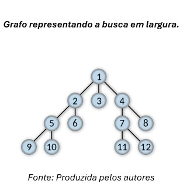
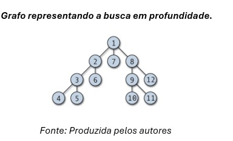
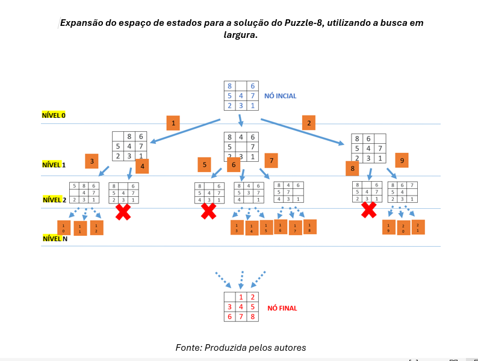
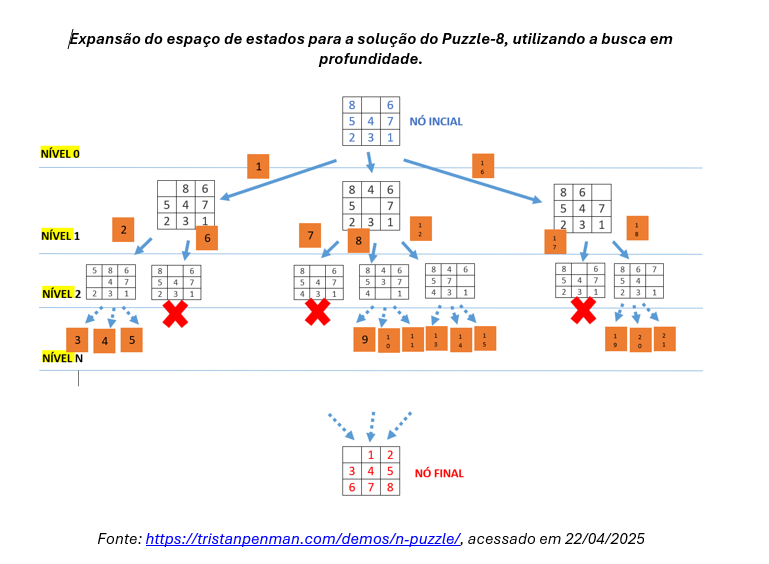
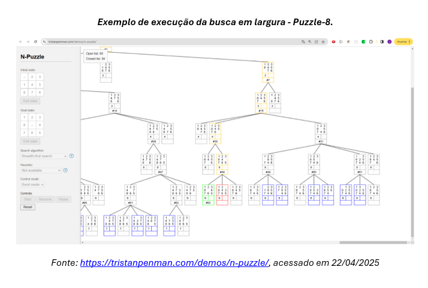
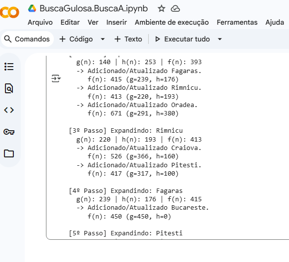

01O problema que está em tudo
Toda vez que você pede um trajeto no mapa, joga uma partida de xadrez ou tenta achar um nome numa lista telefônica, você está fazendo uma busca: procurando uma solução dentro de um espaço de possibilidades.
Busca é o processo de procurar uma solução em um espaço de possibilidades.
Isso parece abstrato, mas está em situações do dia a dia:
📇 Lista telefônica
Procurar um nome específico entre milhares de contatos — um espaço de busca pequeno e bem organizado.
🗺️ Google Maps
Encontrar o melhor caminho entre dois pontos, entre milhões de rotas possíveis numa cidade.
📊 Maior valor em uma planilha
Achar o valor máximo em um conjunto de dados — um espaço de busca puramente numérico.
♟️ Uma partida de xadrez
Escolher, entre dezenas de jogadas possíveis, aquela que leva à melhor posição futura.
Em IA, a busca é a ferramenta usada para encontrar caminhos, soluções ou estratégias ótimas — seja o trajeto mais curto, a jogada mais vantajosa ou a sequência de tarefas mais eficiente numa fábrica. Muitos problemas de IA, no fundo, são problemas de busca disfarçados.
02Dois jeitos de procurar
Existem duas grandes famílias de algoritmos de busca. A diferença entre elas está em uma pergunta simples: o algoritmo sabe alguma coisa sobre para onde deve ir, ou está caminhando às cegas?
Anda no escuro
Não usa nenhum conhecimento prévio sobre o problema. Explora o espaço de estados de forma sistemática, sem noção de "quão perto" está do objetivo.
Exemplo: resolver um labirinto simples sem mapa, testando caminhos até achar a saída.
Anda com uma bússola
Usa uma heurística — uma estimativa de quão perto um estado está do objetivo — para guiar a exploração e evitar caminhos claramente ruins.
Exemplo: o GPS do carro, que já sabe estimar a distância até o destino antes mesmo de terminar de calcular a rota.
Busca cega é como procurar as chaves perdidas revistando cômodo por cômodo, na ordem. Busca heurística é lembrar "eu estava na cozinha por último" e procurar ali primeiro.
03Busca não informada, algoritmo por algoritmo
Estes são os métodos clássicos que exploram o espaço de estados sem nenhuma pista sobre o objetivo. Cada um faz uma escolha diferente sobre a ordem em que os estados são visitados.
Explora todos os nós de um mesmo nível antes de passar para o próximo. É como uma onda que se espalha uniformemente a partir do ponto de partida.
Vantagem: garante encontrar a solução mais curta (em número de passos). | Desvantagem: consome muita memória, pois guarda muitos nós "em espera".
Mergulha em um caminho até o fim antes de retroceder e tentar outro. É como explorar um labirinto sempre virando à esquerda, até bater num beco sem saída.
Vantagem: usa pouca memória. | Desvantagem: pode se perder em caminhos muito longos e não garante achar o caminho mais curto.
Em vez de olhar para o número de passos, escolhe sempre o caminho com o menor custo acumulado até o momento — útil quando cada movimento tem um "preço" diferente (tempo, distância, pedágio).
Vantagem: garante o caminho de menor custo total. | Desvantagem: pode explorar muitos nós irrelevantes se não houver noção de direção.
Largura x Profundidade, lado a lado
O mesmo grafo pode ser percorrido de duas formas bem diferentes. Compare a ordem numerada de visita de cada nó:


04Colocando a teoria em ação: o Puzzle-8
O Puzzle-8 é um clássico para visualizar busca: você precisa reorganizar as peças numeradas, movendo o espaço vazio, até chegar à configuração final. Cada arranjo do tabuleiro é um estado; cada movimento é uma transição entre estados.


O simulador N-Puzzle permite escolher o algoritmo (largura, profundidade, heurísticas) e assistir à expansão do espaço de estados em tempo real, passo a passo.

05Dando "faro" ao algoritmo
Quando o espaço de busca é enorme — como as ruas de uma cidade inteira — explorar tudo às cegas é inviável. É aí que entram as heurísticas: estimativas que ajudam o algoritmo a priorizar os caminhos mais promissores.
Escolhe sempre o movimento que parece melhor no momento, guiado só pela heurística — sem olhar para o custo já gasto até ali.
Vantagem: rápida. | Desvantagem: pode tomar decisões gananciosas demais e não achar a melhor solução global.
Combina o melhor dos dois mundos: o custo já percorrido (como no Custo Uniforme) e a estimativa até o objetivo (como na Busca Gulosa).
Vantagem: encontra o caminho ótimo de forma muito mais eficiente que os métodos cegos. | Desvantagem: depende de uma boa heurística — uma heurística ruim pode enganar o algoritmo.
O A* é usado, na prática, em GPS, jogos e robótica — qualquer situação em que se precisa do melhor caminho, rápido, sem varrer todas as opções possíveis.
Vendo o A* pensar, passo a passo
No exemplo abaixo (rodando em Python/Google Colab), o algoritmo A* está buscando o caminho até Bucareste, num mapa clássico da Romênia usado no livro de Russell & Norvig. Repare como ele expande sempre o nó de menor f(n), registrando g (custo percorrido) e h (estimativa restante) a cada passo:

06Da teoria ao mundo real
Os mesmos princípios — estados, custos, heurísticas — reaparecem em problemas de otimização bem concretos. Veja três exemplos que conectam diretamente com o que já estudamos.
🚚 Rotas de entrega
Uma transportadora precisa entregar pacotes em vários endereços com o menor custo (tempo, combustível, pedágios). Isso é modelado como busca:
- Estados: cada cruzamento ou ponto de entrega já visitado.
- Custo g(n): distância ou tempo já percorrido.
- Heurística h(n): distância em linha reta até o próximo destino (é assim que Google Maps e Waze conseguem sugerir rotas quase instantaneamente).
- Algoritmo típico: A* ou variações, muitas vezes combinadas com técnicas de otimização combinatória quando há múltiplas paradas (problema do caixeiro-viajante).
A rota em laranja é a que o A* escolheria: a cada cruzamento (nó cinza), o algoritmo compara g(n) + h(n) entre as ruas disponíveis e segue pela mais promissora.
🏭 Escala de produção
Uma fábrica precisa decidir a ordem em que várias tarefas serão executadas nas máquinas disponíveis, minimizando tempo ocioso e atrasos. Também é um problema de busca — só que o "caminho" agora é uma sequência de decisões:
- Estados: escalas parciais (quais tarefas já foram alocadas, em qual ordem).
- Custo g(n): tempo total gasto até aquele ponto da escala.
- Heurística h(n): estimativa do tempo restante para concluir as tarefas pendentes.
- Objetivo: a escala completa com menor tempo total (ou menor atraso) — um problema de otimização combinatória, resolvido com busca heurística, algoritmos genéticos ou programação por restrições, dependendo da escala do problema.
Cada arranjo possível das tarefas nas máquinas é um "estado". O algoritmo de busca compara escalas parciais para encontrar a sequência de menor tempo total.
♟️ Busca em jogos
Em jogos como xadrez, damas ou até Pac-Man, a IA precisa escolher a melhor jogada considerando que o adversário também está tentando vencer. A árvore de busca aqui alterna entre dois pontos de vista:
- Estados: configurações possíveis do tabuleiro (ou do labirinto, no caso do Pac-Man).
- Camadas MAX / MIN: o algoritmo Minimax simula alternadamente a melhor jogada do jogador (maximizar vantagem) e a melhor resposta do adversário (minimizar a vantagem do jogador).
- Poda alfa-beta: uma otimização que descarta ramos da árvore que já se sabe que não serão escolhidos — economizando tempo de busca sem perder a jogada ótima.
Assim que o ramo direito garante um valor pior para MAX do que a alternativa já encontrada (o "3" à esquerda), a poda alfa-beta descarta o restante da busca naquele ramo — sem afetar o resultado final.
07Qual algoritmo usar?
Não existe um algoritmo "melhor" universalmente — a escolha depende do problema. Esta tabela resume quando cada um se destaca:
| Algoritmo | Garante o ótimo? | Uso de memória | Quando usar |
|---|---|---|---|
| BFS | Sim (em nº de passos) | Alto | Espaço pequeno, todos os custos iguais |
| DFS | Não | Baixo | Memória limitada, solução pode estar profunda |
| Custo Uniforme | Sim (em custo) | Alto | Custos variáveis, sem heurística disponível |
| Busca Gulosa | Não | Médio | Velocidade é prioridade sobre otimalidade |
| A* | Sim (com heurística admissível) | Médio–Alto | Quando existe uma boa heurística disponível |
Roteiro rápido para decidir em prova (ou na vida real)
- Existe alguma informação que ajude a estimar a distância até o objetivo? Se não, use busca cega (BFS, DFS ou Custo Uniforme).
- Se existe, vale a pena usar A* — quase sempre a melhor escolha quando há heurística confiável.
- Memória é um problema sério (poucos recursos)? Prefira DFS.
- Todos os movimentos têm o mesmo custo e você quer o caminho mais curto? BFS resolve.
- Custos diferentes entre movimentos, sem heurística? Custo Uniforme.
O que fica desta aula
Busca é o processo de explorar um espaço de possibilidades até encontrar uma solução — e a diferença entre "andar às cegas" e "andar com bússola" é o que separa a busca não informada da busca heurística.
- BFS e DFS exploram sistematicamente, sem pistas — cada um trocando velocidade por garantias diferentes.
- Custo Uniforme, Busca Gulosa e A* incorporam custo e/ou estimativa para tomar decisões mais espertas.
- O mesmo raciocínio resolve rotas de entrega, escalas de produção e jogos com adversário — só muda o que conta como "estado", "custo" e "heurística".
- Na prática, a escolha do algoritmo é sempre uma troca entre otimalidade, velocidade e memória disponível.
08Para explorar depois da aula
- Visualização interativa de BFS/DFS: visualgo.net/en/dfsbfs
- Simulador de A* em grade (pathfinding): qiao.github.io/PathFinding.js/visual
- Simulador do Puzzle-8 (BFS/DFS/heurísticas): tristanpenman.com/demos/n-puzzle
- Leitura complementar: Russell & Norvig, Artificial Intelligence: A Modern Approach, capítulos 3–4.